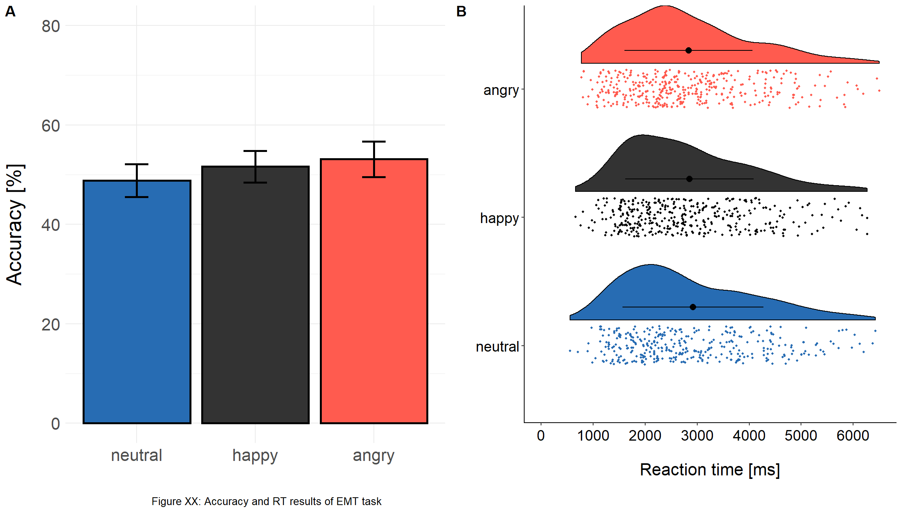

Emotion and empathy measures
# Concatenate EMT task data --------------------------------------
# Load questionnaire data
QN_data = readRDS("./data/QN_data.rds", refhook = NULL)
# Get data file info
files_emt = list.files(path="./data/EMT", pattern="*t_file.csv")
nfiles = length(files_emt)
# Get EMT task specifics
# Picture order information
Pic_data = readWorksheetFromFile("./data/EMT_task_specifics.xlsx",
sheet = "Picture_order",
startCol = 1,
endCol = 0)
# Match ID format
IDs = c(paste("0",c(1:2,4,6:9), sep=""), paste(c(10:33), sep=""))
QN_data$ID = IDs
# Set number of trials
num_trials_emt = 72
# Combine data
for (i in 1:nfiles) {
# Get EEG file per subject
if (i == 27) {
EMT_Indiv = read.csv(file=paste("./data/EMT/",files_emt [i], sep = ""), stringsAsFactors=FALSE, header=TRUE, sep=";")
} else{
EMT_Indiv = read.csv(file=paste("./data/EMT/",files_emt [i], sep = ""), header=TRUE, sep=",",stringsAsFactors=FALSE)
}
# Add ID
EMT_Indiv$ID = substr(files_emt [i],1,2)
# Bring ID to the front
EMT_Indiv=EMT_Indiv[, c(6,1:5)]
if (i==1) {
EMT_All = EMT_Indiv # first round: create EMT_All data frame
} else {
EMT_All = rbind(EMT_All,EMT_Indiv) # add to EMT_All data frame
}
# Clear previous
remove(EMT_Indiv)
}
# Add trial number
EMT_All$Trial = c(rep(1:num_trials_emt,32))
# Add stimulus information
EMT_All$Stim_Type = Pic_data$Stimulus[match(EMT_All$Image_1,Pic_data$Image_1,nomatch = NA)]
# Add age and working memory score
EMT_All$Age = QN_data$age[match(EMT_All$ID,QN_data$ID,nomatch = NA)]
EMT_All$WM = QN_data$WM[match(EMT_All$ID,QN_data$ID,nomatch = NA)]
# RT inspection and cleaning ----------------------------------------------
# Re-code RTs into numeric format
EMT_All$RT_in_ms = as.numeric(EMT_All$RT_in_ms)
# Transform reaction times from seconds to milliseconds
EMT_All$RT_in_ms = EMT_All$RT_in_ms*1000
# Create variables which capture RT outliers (TRUE = outlier, FALSE = kept for further analyses)
EMT_All$Exclude_smaller_250ms = FALSE
EMT_All$Exclude_larger_7s = FALSE
EMT_All$Exclude_MAD = FALSE
# Clean RT_in_ms for values < 250 ms
EMT_All$Exclude_smaller_250ms[EMT_All$RT_in_ms <=250] = TRUE
# Clean RT_in_ms for values < 10 s
EMT_All$Exclude_larger_7s[EMT_All$RT_in_ms >=7000] = TRUE
## Calculate the median absolute deviation for each participant ##
# Define IDs
IDs = c(paste("0",c(1,2,4:9), sep=""), paste(c(10:33), sep=""))
# Set MAD cutoff
MAD_cutoff = 2.5
# Identify outliers +/- 2.5 times the MAD
for (m in 1:length(IDs)) {
EMT_All_outl_ind = subset (EMT_All[EMT_All$Exclude_smaller_250ms==FALSE|EMT_All$Exclude_larger_7s==FALSE,], ID == IDs[m])
MAD_ind = mad(EMT_All_outl_ind$RT_in_ms)
EMT_All[EMT_All$ID==IDs[m],]$Exclude_MAD[EMT_All_outl_ind$RT_in_ms < MAD_ind-MAD_cutoff*MAD_ind | EMT_All_outl_ind$RT_in_ms > MAD_ind+MAD_cutoff*MAD_ind] = TRUE
}
# Save file as .rds -----------------------------------------------------
# Remove image_1 / image_2
EMT_All = subset(EMT_All, select = -c(2,3) )
# De-select participant
EMT_All = EMT_All[with(EMT_All, !(EMT_All$ID=="05")), ]
# Save .rds file
saveRDS(EMT_All, file = "./data/EMT.rds")3.3 Emotion- and empathy-related measures
3.3.1 Emotion matching task
3.3.1.1 Accuracy
Assumption Checks
GLMM_EMT: Random effect structure
# RT cleaning criteria
EMT_Acc = subset(EMT_All,Exclude_smaller_250ms == FALSE & Exclude_larger_7s == FALSE & Exclude_MAD == FALSE)
# Factor random effects
EMT_Acc$ID = as.factor(EMT_Acc$ID)
EMT_Acc$Stim_Type = as.factor(EMT_Acc$Stim_Type)
# Create factor, define neutral as baseline
EMT_Acc$emotion = factor(EMT_Acc$emotion, levels=c("neutral","happy","angry"))
# Set treatment contrast
contrasts(EMT_Acc$emotion) = contr.treatment(3)
# 1) Construct full model
# Add contrast columns
mm_c = model.matrix( ~ emotion, EMT_Acc)
# Attach to dataframe
EMT_Acc[,(ncol(EMT_Acc)+1):(ncol(EMT_Acc)+3)] = mm_c
names(EMT_Acc)[(ncol(EMT_Acc)-2):ncol(EMT_Acc)] = c("Mean","Hap_Neu", "Ang_Neu")
# Construct model
mod_EMT_Acc.glmm1 = glmer(Answer~ Hap_Neu + Ang_Neu + scale(Age) + scale(WM) +
(1 + Hap_Neu + Ang_Neu ||ID) +
(1 + Hap_Neu + Ang_Neu ||Stim_Type),
data = EMT_Acc,control=glmerControl(calc.derivs = FALSE),
family = binomial)
# 1st: check how many zero variance terms you got in random effects
summary(rePCA(mod_EMT_Acc.glmm1))## $Stim_Type
## Importance of components:
## [,1] [,2] [,3]
## Standard deviation 2.61 2.370 0.9531
## Proportion of Variance 0.51 0.422 0.0682
## Cumulative Proportion 0.51 0.932 1.0000
##
## $ID
## Importance of components:
## [,1] [,2] [,3]
## Standard deviation 0.844 0.812 0.3587
## Proportion of Variance 0.475 0.440 0.0857
## Cumulative Proportion 0.475 0.914 1.0000 # 2nd: check which random terms explain the least variance
print(VarCorr(mod_EMT_Acc.glmm1),comp = "Variance")## Groups Name Variance
## Stim_Type Ang_Neu 5.615
## Stim_Type.1 Hap_Neu 6.796
## Stim_Type.2 (Intercept) 0.908
## ID Ang_Neu 0.713
## ID.1 Hap_Neu 0.129
## ID.2 (Intercept) 0.660 # Likelihood ratio testing
# ID
mod_EMT_Acc.glmm2 = glmer(Answer~ Hap_Neu + Ang_Neu + scale(Age) + scale(WM) +
(1 |ID) +
(1 + Hap_Neu + Ang_Neu ||Stim_Type),
data = EMT_Acc,control=glmerControl(calc.derivs = FALSE),
family = binomial)
mod_EMT_Acc.glmm3 = glmer(Answer~ Hap_Neu + Ang_Neu + scale(Age) + scale(WM) +
(1 + Hap_Neu|ID) +
(1 + Hap_Neu + Ang_Neu ||Stim_Type),
data = EMT_Acc,control=glmerControl(calc.derivs = FALSE),
family = binomial)
mod_EMT_Acc.glmm4 = glmer(Answer~ Hap_Neu + Ang_Neu + scale(Age) + scale(WM) +
(1 + Ang_Neu|ID) +
(1 + Hap_Neu + Ang_Neu || Stim_Type),
data = EMT_Acc,control=glmerControl(calc.derivs = FALSE),
family = binomial)
# Calculate ANOVA
anova(mod_EMT_Acc.glmm1,mod_EMT_Acc.glmm2)## Data: EMT_Acc
## Models:
## mod_EMT_Acc.glmm2: Answer ~ Hap_Neu + Ang_Neu + scale(Age) + scale(WM) + (1 | ID) +
## mod_EMT_Acc.glmm2: (1 + Hap_Neu + Ang_Neu || Stim_Type)
## mod_EMT_Acc.glmm1: Answer ~ Hap_Neu + Ang_Neu + scale(Age) + scale(WM) + (1 + Hap_Neu +
## mod_EMT_Acc.glmm1: Ang_Neu || ID) + (1 + Hap_Neu + Ang_Neu || Stim_Type)
## Df AIC BIC logLik deviance Chisq Chi Df
## mod_EMT_Acc.glmm2 9 1394 1441 -688 1376
## mod_EMT_Acc.glmm1 11 1392 1451 -685 1370 5.43 2
## Pr(>Chisq)
## mod_EMT_Acc.glmm2
## mod_EMT_Acc.glmm1 0.066 .
## ---
## Signif. codes: 0 '***' 0.001 '**' 0.01 '*' 0.05 '.' 0.1 ' ' 1 anova(mod_EMT_Acc.glmm1,mod_EMT_Acc.glmm3)## Data: EMT_Acc
## Models:
## mod_EMT_Acc.glmm1: Answer ~ Hap_Neu + Ang_Neu + scale(Age) + scale(WM) + (1 + Hap_Neu +
## mod_EMT_Acc.glmm1: Ang_Neu || ID) + (1 + Hap_Neu + Ang_Neu || Stim_Type)
## mod_EMT_Acc.glmm3: Answer ~ Hap_Neu + Ang_Neu + scale(Age) + scale(WM) + (1 + Hap_Neu |
## mod_EMT_Acc.glmm3: ID) + (1 + Hap_Neu + Ang_Neu || Stim_Type)
## Df AIC BIC logLik deviance Chisq Chi Df
## mod_EMT_Acc.glmm1 11 1392 1451 -685 1370
## mod_EMT_Acc.glmm3 11 1396 1454 -687 1374 0 0
## Pr(>Chisq)
## mod_EMT_Acc.glmm1
## mod_EMT_Acc.glmm3 1 anova(mod_EMT_Acc.glmm1,mod_EMT_Acc.glmm4)## Data: EMT_Acc
## Models:
## mod_EMT_Acc.glmm1: Answer ~ Hap_Neu + Ang_Neu + scale(Age) + scale(WM) + (1 + Hap_Neu +
## mod_EMT_Acc.glmm1: Ang_Neu || ID) + (1 + Hap_Neu + Ang_Neu || Stim_Type)
## mod_EMT_Acc.glmm4: Answer ~ Hap_Neu + Ang_Neu + scale(Age) + scale(WM) + (1 + Ang_Neu |
## mod_EMT_Acc.glmm4: ID) + (1 + Hap_Neu + Ang_Neu || Stim_Type)
## Df AIC BIC logLik deviance Chisq Chi Df
## mod_EMT_Acc.glmm1 11 1392 1451 -685 1370
## mod_EMT_Acc.glmm4 11 1391 1449 -685 1369 1.36 0
## Pr(>Chisq)
## mod_EMT_Acc.glmm1
## mod_EMT_Acc.glmm4 <0.0000000000000002 ***
## ---
## Signif. codes: 0 '***' 0.001 '**' 0.01 '*' 0.05 '.' 0.1 ' ' 1 # Stimulus type
mod_EMT_Acc.glmm5 = glmer(Answer~ Hap_Neu + Ang_Neu + scale(Age) + scale(WM) +
(1 + Hap_Neu + Ang_Neu ||ID) +
(1 + Hap_Neu |Stim_Type),
data = EMT_Acc,control=glmerControl(calc.derivs = FALSE),
family = binomial)
mod_EMT_Acc.glmm6 = glmer(Answer~ Hap_Neu + Ang_Neu + scale(Age) + scale(WM) +
(1 + Hap_Neu + Ang_Neu ||ID) +
(1 + Ang_Neu|Stim_Type),
data = EMT_Acc,control=glmerControl(calc.derivs = FALSE),
family = binomial)
mod_EMT_Acc.glmm7 = glmer(Answer~ Hap_Neu + Ang_Neu + scale(Age) + scale(WM) +
(1 + Hap_Neu + Ang_Neu ||ID) +
(1 |Stim_Type),
data = EMT_Acc,control=glmerControl(calc.derivs = FALSE),
family = binomial)
# Calculate ANOVAs
anova(mod_EMT_Acc.glmm1,mod_EMT_Acc.glmm5)## Data: EMT_Acc
## Models:
## mod_EMT_Acc.glmm1: Answer ~ Hap_Neu + Ang_Neu + scale(Age) + scale(WM) + (1 + Hap_Neu +
## mod_EMT_Acc.glmm1: Ang_Neu || ID) + (1 + Hap_Neu + Ang_Neu || Stim_Type)
## mod_EMT_Acc.glmm5: Answer ~ Hap_Neu + Ang_Neu + scale(Age) + scale(WM) + (1 + Hap_Neu +
## mod_EMT_Acc.glmm5: Ang_Neu || ID) + (1 + Hap_Neu | Stim_Type)
## Df AIC BIC logLik deviance Chisq Chi Df
## mod_EMT_Acc.glmm1 11 1392 1451 -685 1370
## mod_EMT_Acc.glmm5 11 1421 1479 -700 1399 0 0
## Pr(>Chisq)
## mod_EMT_Acc.glmm1
## mod_EMT_Acc.glmm5 1 anova(mod_EMT_Acc.glmm1,mod_EMT_Acc.glmm6)## Data: EMT_Acc
## Models:
## mod_EMT_Acc.glmm1: Answer ~ Hap_Neu + Ang_Neu + scale(Age) + scale(WM) + (1 + Hap_Neu +
## mod_EMT_Acc.glmm1: Ang_Neu || ID) + (1 + Hap_Neu + Ang_Neu || Stim_Type)
## mod_EMT_Acc.glmm6: Answer ~ Hap_Neu + Ang_Neu + scale(Age) + scale(WM) + (1 + Hap_Neu +
## mod_EMT_Acc.glmm6: Ang_Neu || ID) + (1 + Ang_Neu | Stim_Type)
## Df AIC BIC logLik deviance Chisq Chi Df
## mod_EMT_Acc.glmm1 11 1392 1451 -685 1370
## mod_EMT_Acc.glmm6 11 1470 1528 -724 1448 0 0
## Pr(>Chisq)
## mod_EMT_Acc.glmm1
## mod_EMT_Acc.glmm6 1 anova(mod_EMT_Acc.glmm1,mod_EMT_Acc.glmm7)## Data: EMT_Acc
## Models:
## mod_EMT_Acc.glmm7: Answer ~ Hap_Neu + Ang_Neu + scale(Age) + scale(WM) + (1 + Hap_Neu +
## mod_EMT_Acc.glmm7: Ang_Neu || ID) + (1 | Stim_Type)
## mod_EMT_Acc.glmm1: Answer ~ Hap_Neu + Ang_Neu + scale(Age) + scale(WM) + (1 + Hap_Neu +
## mod_EMT_Acc.glmm1: Ang_Neu || ID) + (1 + Hap_Neu + Ang_Neu || Stim_Type)
## Df AIC BIC logLik deviance Chisq Chi Df
## mod_EMT_Acc.glmm7 9 1564 1611 -773 1546
## mod_EMT_Acc.glmm1 11 1392 1451 -685 1370 175 2
## Pr(>Chisq)
## mod_EMT_Acc.glmm7
## mod_EMT_Acc.glmm1 <0.0000000000000002 ***
## ---
## Signif. codes: 0 '***' 0.001 '**' 0.01 '*' 0.05 '.' 0.1 ' ' 1 # Final model
mod_EMT_Acc.glmm8 = glmer(Answer~ Hap_Neu + Ang_Neu + scale(Age) + scale(WM) +
(1 + Hap_Neu + Ang_Neu || ID) +
(1 + Hap_Neu + Ang_Neu || Stim_Type),
data = EMT_Acc,control=glmerControl(calc.derivs = FALSE),
family = binomial) GLMM_EMT: Overdispersion
If the p-value is < 0.05, the data are overdispersed. Here p > 0.05. Hence overdispersion is not a problem.
# 2) Assumption check: Appropriate estimation of variance (no overdispersion)
overdisp_fun(mod_EMT_Acc.glmm8)## chisq ratio rdf p
## 958.10 0.66 1446.00 1.00Within the analysis of accuracy of the EMT, we examined whether children would be more accurate to detect emotional vs neutral faces. Our final GLMM was comprised of random intercepts for participant and stimulus as well as a random slope for angry in contrast to neutral faces for participant and a random slope for both emotion contrasts for stimulus. We did not find a significant effect for happy in comparison to neutral faces (\(\hat{β}\) = 0.41, p = 0.42, OR = 1.51 [95% CI:-0.97, 3.99]) or angry in comparison to neutral faces (\(\hat{β}\) = 0.81, p = 0.11, OR = 2.25 [95% CI:-1.45, 5.96]; see Figure X A). None of the covariates reached significance (age: \(\hat{β}\) = 0.24, p = 0.18, OR = 1.28 [95% CI:-0.82, 3.37]; working memory: \(\hat{β}\) = 0.09, p = 0.61, OR = 1.1 [95% CI:-0.71, 2.9]).
# Select RT inspected criteria
EMT_Acc_Plot = subset(EMT_All,Exclude_smaller_250ms == FALSE & Exclude_larger_7s == FALSE & Exclude_MAD == FALSE)
# Select correct trials
EMT_Acc_Plot = subset(EMT_Acc_Plot, Answer == 1)
# Create factor, define neutral as baseline
EMT_Acc_Plot$emotion = factor(EMT_Acc_Plot$emotion, levels=c("neutral","happy","angry"))
# Get accuracy for novel and repeated condition
acc_all = data.frame(xtabs(~ID+emotion, EMT_Acc_Plot))
# Recode to accuracy in percent
# 24 trials per emotion condition (neutral, happy, angry)
acc_all$Freq = (acc_all$Freq/24)*100
# Calculate descriptives on accuracy
stats_acc_all = summarySE(acc_all, measurevar="Freq", groupvars=c("emotion"))
# Plot accuracy
EMT_Acc_bar = ggplot(stats_acc_all, aes(x=emotion, y=Freq, fill = emotion)) +
geom_bar(position=position_dodge(), stat="identity",colour="black", size=1,width=0.9) +
geom_errorbar(aes(ymin=Freq-se, ymax=Freq+se), size=1, width=0.2, position=position_dodge(.9)) +
labs (x= "", y = "Accuracy [%]") +
ylim(0, 80) +
scale_fill_manual(values=c("#276CB3","grey20","#FF5B4F"))+
theme_minimal()+
theme(axis.title.y = element_text(size = 20, margin = margin(t = 0, r = 20, b = 0, l = 0)),
text=element_text(size = 20, family = "Segoe UI"),
legend.position = "none")
# Check whether plot accounts for colorblindness / desaturation
# view_cvd(fig)
# Raincloud plot EMT RT
# Only examine clean data
EMT_RT_Plot = subset(EMT_All,Exclude_smaller_250ms == FALSE & Exclude_larger_7s == FALSE & Exclude_MAD == FALSE)
# Select correct responses
EMT_RT_Plot = subset(EMT_RT_Plot, Answer == 1)
# Create factor, define neutral as baseline
EMT_RT_Plot$emotion = factor(EMT_RT_Plot$emotion, levels=c("neutral","happy","angry"))
# Set theme
raincloud_theme = theme(
text = element_text(size = 10, color = "black"),
axis.title.x = element_text(size = 16, margin = margin(t = 20, r = 0, b = 0, l = 0)),
axis.title.y = element_text(size = 16),
axis.text = element_text(size = 14, color = "black"),
axis.text.x = element_text(angle = 0, vjust = 0.5),
legend.title=element_text(size=16),
legend.text=element_text(size=16),
legend.position = "right",
plot.title = element_text(lineheight=.8, face="bold", size = 16),
panel.border = element_blank(),
panel.grid.minor = element_blank(),
panel.grid.major = element_blank(),
axis.line.x = element_line(colour = 'black', size=0.5, linetype='solid'),
axis.line.y = element_line(colour = 'black', size=0.5, linetype='solid'))
# Calculate summary
lb = function(x) mean(x) - sd(x)
ub = function(x) mean(x) + sd(x)
sumld = ddply(EMT_RT_Plot , ~ emotion, summarise,
mean = mean(RT_in_ms), median = median(RT_in_ms), lower = lb(RT_in_ms), upper = ub(RT_in_ms))
# Plot rainclouds
EMT_RT_rain = ggplot(data = EMT_RT_Plot, aes(y = RT_in_ms, x = emotion, fill = emotion)) +
geom_flat_violin(position = position_nudge(x = .2, y = 0), alpha = 1, color="black") +
ylab("Reaction time [ms]")+
scale_y_continuous(name="Reaction time [ms]", breaks=seq(0,6500,1000), limits=c(0,6500))+
xlab("")+
geom_point(aes(y = RT_in_ms, color = emotion), shape = 19,
position = position_jitter(width = .15), size = .7, alpha = 1) +
geom_point(data = sumld, aes(x = emotion, y = mean), position = position_nudge(x = 0.3), size = 2.5) +
geom_errorbar(data = sumld, aes(ymin = lower, ymax = upper, y = mean), position = position_nudge(x = 0.3), width = 0) +
expand_limits(x = 2.00) +
guides(fill = FALSE) +
guides(color = FALSE) +
coord_flip() + # flip or not?
scale_fill_manual(values=c("#276CB3","grey20","#FF5B4F")) +
scale_color_manual(values=c("#276CB3","#000000","#FF5B4F"))+
theme_bw() +
raincloud_theme
# Combine plots
combine_plots(EMT_Acc_bar, EMT_RT_rain,
ncol = 2, nrow=1,
labels = c("A", "B"),
caption.color = "black",
caption.vjust = 0,
caption.hjust = 1.3,
caption.text = "Figure XX: Accuracy and RT results of EMT task") 
3.3.1.2 Reaction time
Assumption Checks
LMM_EMT: Normality of residuals
# Correct responses
EMT_RT = subset(EMT_All, Answer == 1)
# RT cleaning criteria
EMT_RT = subset(EMT_RT,Exclude_smaller_250ms == FALSE & Exclude_larger_7s == FALSE & Exclude_MAD == FALSE)
# Factor random effects
EMT_RT$ID = as.factor(EMT_RT$ID)
EMT_RT$Stim_Type = as.factor(EMT_RT$Stim_Type)
# Create factor, define neutral as baseline
EMT_RT$emotion = factor(EMT_RT$emotion, levels=c("neutral","happy","angry"))
# Set treatment contrast
contrasts(EMT_RT$emotion) = contr.treatment(3)
# 1) Check properties of DV / residuals
# Visualize normality assumption of residuals (without log transform)
mod_RT_lmm_no_log = lm(RT_in_ms ~ emotion, data=EMT_RT)
res.mod_RT_lmm_no_log = residuals(mod_RT_lmm_no_log)
par(mfrow=c(1,2))
qqpl_RT_lmm_no_log = qqPlot(res.mod_RT_lmm_no_log, main="QQplot before transformation")
norm_RT_lmm_no_log = plot(density(res.mod_RT_lmm_no_log), main="Density plot before transformation") 
par(mfrow=c(1,1))
# Check which transformation of DV is suitable
# Calculate box-cox plot
mod_RT_targ = lm(RT_in_ms ~ emotion, data=EMT_RT)
boxcox(mod_RT_targ) 
# In that case: Decision to log transform!
# Visualize normality assumption of residuals (with log transform)
mod_RT_lmm_log = lm(log(RT_in_ms) ~ emotion, data=EMT_RT)
res.mod_RT_lmm_log = residuals(mod_RT_lmm_log)
par(mfrow=c(1,2))
qqpl_RT_lmm_log = qqPlot(res.mod_RT_lmm_log, main="QQplot after transformation")
norm_RT_lmm_log = plot(density(res.mod_RT_lmm_log), main="Density plot after transformation") 
par(mfrow=c(1,1)) LMM_EMT: Random effect structure
# 3) Construct full model
# Add contrast columns
mm_c = model.matrix( ~ emotion, EMT_RT)
# Attach to dataframe
EMT_RT[,(ncol(EMT_RT)+1):(ncol(EMT_RT)+3)] = mm_c
names(EMT_RT)[(ncol(EMT_RT)-2):ncol(EMT_RT)] = c("Mean","Hap_Neu", "Ang_Neu")
# Build model
mod_EMT_RT.lmer1 = lmer(log(RT_in_ms) ~
Hap_Neu + Ang_Neu + scale(Age) + scale(WM) +
(1 + Hap_Neu + Ang_Neu||ID) +
(1 + Hap_Neu + Ang_Neu||Stim_Type),
data = EMT_RT,
control=lmerControl(calc.derivs = FALSE))
# 1st: check how many zero variance terms you got in random effects
summary(rePCA(mod_EMT_RT.lmer1))## $Stim_Type
## Importance of components:
## [,1] [,2] [,3]
## Standard deviation 0.0859 0.000226 0.00017
## Proportion of Variance 1.0000 0.000010 0.00000
## Cumulative Proportion 1.0000 1.000000 1.00000
##
## $ID
## Importance of components:
## [,1] [,2] [,3]
## Standard deviation 0.919 0.267 0
## Proportion of Variance 0.922 0.078 0
## Cumulative Proportion 0.922 1.000 1 # 2nd: check which random terms explain the least variance
print(VarCorr(mod_EMT_RT.lmer1),comp = "Variance")## Groups Name Variance
## Stim_Type Ang_Neu 0.00000000586
## Stim_Type.1 Hap_Neu 0.00000000333
## Stim_Type.2 (Intercept) 0.00084987218
## ID Ang_Neu 0.00822557019
## ID.1 Hap_Neu 0.00000000000
## ID.2 (Intercept) 0.09720416779
## Residual 0.11506785075 # Improved model
mod_EMT_RT.lmer2 = lmer(log(RT_in_ms) ~
Hap_Neu + Ang_Neu + scale(Age) + scale(WM) +
(1 + Ang_Neu||ID) +
(0 + Ang_Neu||Stim_Type),
data = EMT_RT,
control=lmerControl(calc.derivs = FALSE))
# Re-check the model
summary(rePCA(mod_EMT_RT.lmer2))## $Stim_Type
## Importance of components:
## [,1]
## Standard deviation 0
## Proportion of Variance NaN
## Cumulative Proportion NaN
##
## $ID
## Importance of components:
## [,1] [,2]
## Standard deviation 0.916 0.2679
## Proportion of Variance 0.921 0.0787
## Cumulative Proportion 0.921 1.0000 print(VarCorr(mod_EMT_RT.lmer2 ),comp = "Variance")## Groups Name Variance
## Stim_Type Ang_Neu 0.00000
## ID Ang_Neu 0.00832
## ID.1 (Intercept) 0.09733
## Residual 0.11587 # Likelihood ratio testing
# ID
mod_EMT_RT.lmer3 = lmer(log(RT_in_ms) ~
Hap_Neu + Ang_Neu + scale(Age) + scale(WM) +
(1 |ID) +
(0 + Ang_Neu||Stim_Type),
data = EMT_RT,
control=lmerControl(calc.derivs = FALSE))
# Calculate ANOVA
anova(mod_EMT_RT.lmer2,mod_EMT_RT.lmer3)## Data: EMT_RT
## Models:
## mod_EMT_RT.lmer3: log(RT_in_ms) ~ Hap_Neu + Ang_Neu + scale(Age) + scale(WM) +
## mod_EMT_RT.lmer3: (1 | ID) + (0 + Ang_Neu || Stim_Type)
## mod_EMT_RT.lmer2: log(RT_in_ms) ~ Hap_Neu + Ang_Neu + scale(Age) + scale(WM) +
## mod_EMT_RT.lmer2: (1 + Ang_Neu || ID) + (0 + Ang_Neu || Stim_Type)
## Df AIC BIC logLik deviance Chisq Chi Df
## mod_EMT_RT.lmer3 8 800 839 -392 784
## mod_EMT_RT.lmer2 9 798 843 -390 780 3.24 1
## Pr(>Chisq)
## mod_EMT_RT.lmer3
## mod_EMT_RT.lmer2 0.072 .
## ---
## Signif. codes: 0 '***' 0.001 '**' 0.01 '*' 0.05 '.' 0.1 ' ' 1 # Stim_Type
mod_EMT_RT.lmer4 = lmer(log(RT_in_ms) ~
Hap_Neu + Ang_Neu + scale(Age) + scale(WM) +
(1 + Ang_Neu|ID) +
(1|Stim_Type),
data = EMT_RT,
control=lmerControl(calc.derivs = FALSE))
# Calculate ANOVA
anova(mod_EMT_RT.lmer2,mod_EMT_RT.lmer4)## Data: EMT_RT
## Models:
## mod_EMT_RT.lmer2: log(RT_in_ms) ~ Hap_Neu + Ang_Neu + scale(Age) + scale(WM) +
## mod_EMT_RT.lmer2: (1 + Ang_Neu || ID) + (0 + Ang_Neu || Stim_Type)
## mod_EMT_RT.lmer4: log(RT_in_ms) ~ Hap_Neu + Ang_Neu + scale(Age) + scale(WM) +
## mod_EMT_RT.lmer4: (1 + Ang_Neu | ID) + (1 | Stim_Type)
## Df AIC BIC logLik deviance Chisq Chi Df
## mod_EMT_RT.lmer2 9 798 843 -390 780
## mod_EMT_RT.lmer4 10 800 849 -390 780 0.99 1
## Pr(>Chisq)
## mod_EMT_RT.lmer2
## mod_EMT_RT.lmer4 0.32 # Final model
mod_EMT_RT.lmer5 = lmer(log(RT_in_ms) ~
Hap_Neu + Ang_Neu + scale(Age) + scale(WM) +
(1 | ID)+
(1 | Stim_Type),
data = EMT_RT,
control=lmerControl(calc.derivs = FALSE))LMM_EMT: Homoscedasticity
# 4) Check homoscedasticity
plot(fitted(mod_EMT_RT.lmer5), residuals(mod_EMT_RT.lmer5))
abline(0, 0) 
We built another LMM to test whether children were also faster to detect emotional compared to neutral faces. The final model included participant and stimulus as random intercepts. Children were significantly faster for happy compared to neutral faces (\(\hat{β}\) = -0.06, p <0.05), but not for angry compared to neutral faces (\(\hat{β}\) = -0.05, p = 0.06; see Figure X B). None of the covariates reached significance (age: \(\hat{β}\) = -0.09, p = 0.14; working memory: \(\hat{β}\) = 0.08, p = 0.18).
labels = c("Intercept","Happy vs Neutral", "Angry vs Neutral", "Age","Working memory")
tab_model(mod_EMT_Acc.glmm8, mod_EMT_RT.lmer5,
pred.labels=labels,
show.se=TRUE, show.stat=TRUE, show.ci = FALSE, string.se = "SE",
show.re.var=FALSE, show.obs=FALSE,
emph.p = TRUE, dv.labels=c("Accuracy","Reaction time") , show.icc = FALSE)| Accuracy | Reaction time | |||||||
|---|---|---|---|---|---|---|---|---|
| Predictors | Odds Ratios | SE | Statistic | p | Estimates | SE | Statistic | p |
| Intercept | 2.58 | 0.25 | 3.82 | <0.001 | 7.85 | 0.06 | 125.75 | <0.001 |
| Happy vs Neutral | 1.51 | 0.51 | 0.81 | 0.420 | -0.06 | 0.03 | -2.06 | 0.039 |
| Angry vs Neutral | 2.25 | 0.50 | 1.61 | 0.106 | -0.05 | 0.03 | -1.87 | 0.061 |
| Age | 1.28 | 0.18 | 1.33 | 0.184 | -0.09 | 0.06 | -1.51 | 0.130 |
| Working memory | 1.10 | 0.18 | 0.50 | 0.614 | 0.08 | 0.06 | 1.37 | 0.171 |
| N | 28 ID | 28 ID | ||||||
| 59 Stim_Type | 59 Stim_Type | |||||||
| Marginal R2 / Conditional R2 | 0.033 / 0.399 | 0.054 / 0.483 | ||||||
Table XX: Results of GLMM and LMM for the analysis of accuracy and reaction time of the emotion matching task (EMT)
3.3.2 EMK and connection to ERPs
# Load data
ERPs = readRDS("data/ERPs.rds", refhook = NULL)
# Correlation ERP P1/P3 with EMT
# Separate data set for neutral and angry and dalculate participant's P1/P3 mean
# angry
ERPs_ang = subset(ERPs, Condition == 3)
ERPs_mean = data.frame(tapply(ERPs_ang$mean_ROI_P1,ERPs_ang$ID, mean))
names(ERPs_mean)[1] = "P1_ang"
ERPs_mean$P3_ang = tapply(ERPs_ang$mean_ROI_P3,ERPs_ang$ID, mean)
# neutral
ERPs_neu = subset(ERPs, Condition == 2)
ERPs_mean$P1_neu = tapply(ERPs_neu$mean_ROI_P1,ERPs_neu$ID, mean)
ERPs_mean$P3_neu = tapply(ERPs_neu$mean_ROI_P3,ERPs_neu$ID, mean)
# Calculate difference score for angry-neutral
ERPs_mean$P1_Diff_Ang_Neu = ERPs_mean$P1_ang-ERPs_mean$P1_neu
ERPs_mean$P3_Diff_Ang_Neu = ERPs_mean$P3_ang-ERPs_mean$P3_neu
# Remove rows of de-selected participants
ERPs_mean = ERPs_mean[-c(4),]
# Integrate questionnare data
ERPs_mean$EMK_EK_P = QN_data$EMK_EK_P
ERPs_mean$EMK_EM_P = QN_data$EMK_EM_P
ERPs_mean$EMK_EK_Ch = QN_data$EMK_EK_Ch
ERPs_mean$EMK_EM_Ch = QN_data$EMK_EM_Ch
# Compute composite scores for parental/children measures of EMK
ERPs_mean$EMK_EK = ERPs_mean$EMK_EK_P + ERPs_mean$EMK_EK_Ch
ERPs_mean$EMK_EM = ERPs_mean$EMK_EM_Ch + ERPs_mean$EMK_EM_Ch
# Select variables
ERPs_corr = subset(ERPs_mean,select = c(P1_Diff_Ang_Neu, P3_Diff_Ang_Neu, EMK_EM,EMK_EK))
# Compute single correlations
P1_EM = cor.test(ERPs_corr$P1_Diff_Ang_Neu,ERPs_corr$EMK_EM, method = c("pearson"))
P3_EM = cor.test(ERPs_corr$P3_Diff_Ang_Neu,ERPs_corr$EMK_EM, method = c("pearson"))
P1_EK = cor.test(ERPs_corr$P1_Diff_Ang_Neu,ERPs_corr$EMK_EK, method = c("pearson"))
P3_EK = cor.test(ERPs_corr$P3_Diff_Ang_Neu,ERPs_corr$EMK_EK, method = c("pearson"))
# Correct for multiple comparisons
# options: "holm", "hochberg", "hommel", "bonferroni", "BH", "BY", "fdr", "none"
#p = c(P1_EM$p.value, P1_EK$p.value, P3_EM$p.value, P3_EK$p.value)
#p.adjust(p, method = "fdr", n = length(p))We also investigated the link between ERP amplitudes and emotion- and empathy-related measures. We calculated correlations between the amplitude differences of angry and neutral faces with composite scores parents’ and experimenter’s rating of children’s empathy and emotion knowledge. Empathy scores correlated positively with P1 and P3 amplitude differences (P1-Empathy: r(29) = 0.23, p = 0.22; P3-Empathy: r(29) = 0.11, p = 0.56. Emotion knowledge correlated slightly negatively with P1 and P3 amplitude differences (r(29) = -0.08, p = 0.67; r(29) = -0.16, p = 0.4). However, none of these correlations reached significance (See Figure X A-D).
# Plot correlation EMK_EM P1 / P3
# Empathy and P1 difference
EMT_ERP_scat1 = ggplot(ERPs_mean,aes(x = EMK_EM, y = P1_Diff_Ang_Neu))+
geom_point(shape = 21, size = 2, color ="black", fill = "#8DB852")+
geom_smooth(method=lm, color = "black", size = 1)+
labs(x = "Compos. Empathy Score", y = "P1 difference angry vs neutral")+
theme_bw()
# Empathy and P3 difference
EMT_ERP_scat2 = ggplot(ERPs_mean,aes(x= EMK_EM, y = P3_Diff_Ang_Neu))+
geom_point(shape = 21, size = 2, color ="black", fill ="firebrick")+
geom_smooth(method=lm, color = "black", size = 1)+
labs(x = "Compos. Empathy Score", y = "P3 difference angry vs neutral")+
theme_bw()
# EK and P1 difference
EMT_ERP_scat3 = ggplot(ERPs_mean,aes(x = EMK_EK, y = P1_Diff_Ang_Neu))+
geom_point(shape = 21, size = 2, color ="black", fill = "darkslategray")+
geom_smooth(method=lm, color = "black", size = 1)+
labs(x = "Compos. EK Score", y = "P1 difference angry vs neutral")+
theme_bw()
# EK and P3 difference
EMT_ERP_scat4 = ggplot(ERPs_mean,aes(x= EMK_EK, y = P3_Diff_Ang_Neu))+
geom_point(shape = 21, size = 2, color ="black", fill ="#3371B8")+
geom_smooth(method=lm, color = "black", size = 1)+
labs(x = "Compos. EK Score", y = "P3 difference angry vs neutral")+
theme_bw()
# Combine plots
combine_plots(EMT_ERP_scat1, EMT_ERP_scat2, EMT_ERP_scat3, EMT_ERP_scat4,
ncol = 4, nrow=1,
labels = c("A", "B","C","D"),
caption.color = "black",
caption.vjust = 0,
caption.hjust = 0.5,
caption.text = "Figure XX: Correlations or ERP Amplitude-Difference with Empathy- and emotion-related measures")